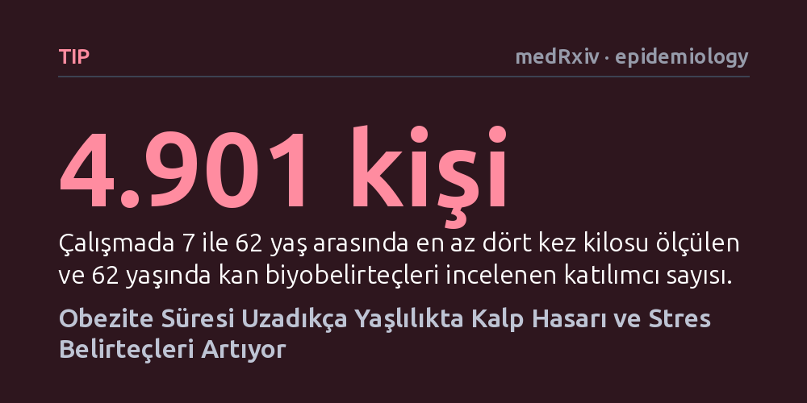

TIP · medRxiv · epidemiology · 2026-10-12
Araştırmacılar, 4.901 kişinin 7 ila 62 yaş arasındaki kilo geçmişini inceleyerek uzun süreli obezitenin kalp sağlığı belirteçlerine etkisini araştırdı. Obezite süresi uzadıkça kalp hasarı belirteci doğrusal artarken, kalp ve hücresel stres belirteçleri özellikle 25 yılı aşan obezitede belirgin yükseliş gösterdi.
Kalp sağlığında yalnızca anlık kilonun değil, obez olarak geçirilen toplam sürenin ve özellikle 25 yıllık eşiğin kalıcı kalp hasarı riskini doğrudan şekillendirdiğini gösteriyor.

Obezitenin kalp ve damar sağlığı üzerindeki olumsuz etkileri tıp dünyasında uzun yıllardır bilinmektedir. Ancak geleneksel araştırmaların büyük bölümü, bireylerin yalnızca belirli bir andaki veya ileri yaştaki vücut kitle indeksine odaklanmıştır. Oysa insan bedeni durağan değildir; çocukluktan yaşlılığa uzanan hayat çizgisi boyunca fazla kilolu geçirilen yılların toplam birikimi, kalp üzerinde anlık bir tartı sonucundan çok daha farklı ve derin bir yıpranma izi bırakabilir.
Araştırmacıların peşine düştüğü temel soru tam olarak buydu: Yıllar boyu süren obezite, yaşlılık dönemine gelindiğinde kalp dokusunda mikroskobik hasar ve kronik stres yaratıyor mu? Üstelik bu yıpranma, tansiyon, kan şekeri ve sosyoekonomik koşullar gibi diğer etkenler hesaba katıldığında bile kalıcı bir biyolojik iz olarak kalıyor mu? Kalp krizine veya klinik kalp yetersizliğine yakalanmadan çok önce kanda bu hasarın izini sürebilmek, koruyucu hekimlik açısından kritik önem taşımaktadır.
Bu soruyu yanıtlamak amacıyla araştırmacılar, İngiltere'de 1958 yılında doğan binlerce bireyi doğum anından itibaren takip eden Ulusal Çocuk Gelişimi Çalışması'nın verilerini inceledi. Analize, 7 ile 62 yaşları arasında en az dört farklı zamanda vücut kitle indeksi ölçülen ve 62 yaşında kan tahlili veren 4.901 katılımcı dahil edildi. Her bir katılımcının yaşam boyu kilo eğrisi gelişmiş matematiksel modellerle haritalandırıldı; bu sayede bireylerin toplam obezite süreleri ve kilonun fazlalık şiddeti belirlendi.
Katılımcılar 62 yaşına ulaştığında, kalbin hücresel durumunu yansıtan üç kritik biyobelirteç ölçüldü: doğrudan kalp kası hasarını gösteren yüksek duyarlılıklı troponin I (hs-cTnI), kalbin aşırı basınç ve gerilim altında olduğunu yansıtan NT-proBNP ve genel hücresel yıpranma ile damarsal stresi işaret eden GDF-15. Araştırma ekibi, erken yaşam koşullarından yaşam tarzı alışkanlıklarına, tansiyondan kan şekerine kadar pek çok faktörü istatistiksel modellerde hesaba katarak obezitenin bağımsız etkisini ayrıştırdı.
Elde edilen bulgular, obezitenin kalp üzerindeki etkisinin her biyobelirteçte aynı seyri izlemediğini ortaya koydu. Doğrudan kalp kası hücrelerinin hasarını yansıtan troponin I seviyesi, obeziteyle geçirilen her ilave yılla birlikte doğrusal bir artış gösterdi. Yaşamının herhangi bir döneminde obezite geçmişi olan erkeklerde troponin seviyeleri, hiç obez olmamış erkeklere kıyasla yüzde 11 daha yüksek bulundu. İlginç şekilde bu belirgin artış kadınlarda tespit edilmedi; bu durum erkek kalbinin kümülatif kilo yüküne hücresel hasar düzeyinde daha duyarlı olabileceğini düşündürmektedir.
Kalp yetersizliğinin öncülü olan kalp duvarı stresi (NT-proBNP) ve hücresel stres belirteci (GDF-15) ise çok daha çarpıcı bir eşik etkisi sergiledi. Katılımcılarda yaklaşık 25 yıla kadar süren obezite boyunca bu iki belirteç nispeten sabit kalırken, obezite süresi 25 yılı aştığında değerler belirgin bir tırmanışa geçti. 25 yıldan sonraki her fazladan obezite yılı, NT-proBNP seviyesinde yüzde 1,80'lik, GDF-15 seviyesinde ise yüzde 0,81'lik kalıcı bir yükselişle ilişkilendirildi. Bu tablo, kalbin aşırı kilo yükünü çeyrek asır boyunca telafi edebildiğini, ancak bu süreden sonra hücresel savunmanın zorlandığını gösteriyor.
Araştırmanın sonuçları, obeziteye yalnızca anlık bir metabolik aksaklık olarak değil, organlar üzerinde biriken zamana bağlı bir yıpranma süreci olarak bakılması gerektiğini net biçimde ortaya koymaktadır. Kalp kası hücreleri maruz kaldığı aşırı mekanik ve hemodinamik yüke uzun yıllar dirense bile, obezite süresi çeyrek asrı aştığında doku düzeyinde geri döndürülmesi güç bir stres birikimi oluşmaktadır. Bu bulgu, genç ve orta yaşta başlayan obezitenin, 60'lı yaşlarda klinik kalp hastalıklarına zemin hazırlayan biyolojik arka planını aydınlatmaktadır.
Toplumsal sağlık açısından en değerli çıkarım, kilo kontrolünde zaman kaybetmemenin önemidir. Kilo verme çabalarını ilerleyen yaşlara ertelemek yerine obezite süresini kritik 25 yıllık eşiğin altında tutacak erken yaşam tarzı değişiklikleri ve tıbbi müdahaleler, kalbin yapısal bütünlüğünü korumada hayati rol oynayabilir. Kısacası çalışma, obeziteyle mücadelede ne kadar erken davranılırsa kalbin o kadar az yıpranacağını somut biyolojik kanıtlarla göstermektedir.